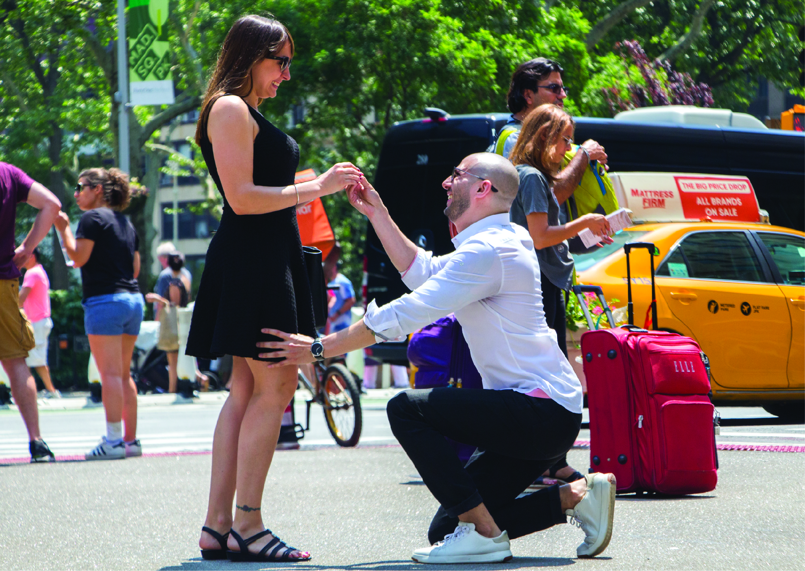

Never date a co-worker. Some companies even have policies against it. I later found out mine did, thankfully it all worked out. You can't help where you meet someone. Well, you can try, but isn't it always in the unexpected moments, in the surprise situations, where someone special catches your eye, that beat out planned dates or Tinder hook-ups? Take hold of those moments, even if you must do so in secret [wink].
So, as you've probably gathered, I met my wife [insert drumroll here] ...at the office. We work in the fashion industry and the companies we worked for, as we'd later do, merged into one. She causally just strolls in one day and pretty much changes my life. Well, maybe it wasn’t as simple as that, I was already dating someone and there was still the stigma of the forbidden fruit that was the hot co-worker. And wow was she a hottie. Still is. But it worked itself out and our flirtatious workdays and secret sangria filled lunches, eventually turned into an official, no longer secret, very real, very sexy relationship.
Fast forward a year, while our companies are going through a nasty break-up (she’s already moved on to bigger and better), we’re discussing moving in together. We move into my apartment. Wanting her to feel the place was as much hers as it was mine, we decided to completely renovate it. The transformation took eight months, turned out better than we imagined, and there wasn't a single time we weren't laughing and enjoying ourselves. Everything in our home reminds us of those moments and it’s still one of the things we love best about it.
We were happy in our apartment. I had been there over a decade, locking in a decent rent payment, a unicorn by New York City standards, and our renovations really brought the place to life. However, something newer and more refined had always been something we both wanted and kept an eye out for. One building in particular came close to perfection for us. It was in our neighborhood, and we passed it often — a new build pretty much erected before our eyes. Purchasing a unit in the building was not yet within our reach and there hadn't been any rentals available. So, living there only existed in our dream realm for quite some time.
One morning while enjoying a boozy brunch at CEBU, my amazingly efficient now wife, I had just learned, had set up Street Easy notifications. This newly acquired knowledge was discovered upon seeing my wife's excitement after she was alerted of an available unit in that very building. Were we in the dream realm? Was our brunch too boozy? Neither, but maybe the booze did contribute to our immediate decision to pull the trigger and apply for the apartment. We found out we were approved during our one-year wedding anniversary celebrations.
I proposed Memorial Day weekend 2018. At that point, it had been at least two years since one, I knew I would, and two (and don’t judge me for this one), I already had a date in mind. Oh, not the date I was thinking of proposing. No, that would have been a reasonable more logical way of going about things. In fact, I had no idea when I would propose. However, I did know I wanted to be married August 18, 2018. Eight, one, eight, one, eight, ugh… groomzilla-esque? You bet! It was one of the coolest palindrome days left in our lifetime and it happened to fall during a palindrome week! I had also designed a graphic using infinity symbols as “eights” and had several hashtag options ready to post. Okay, you may judge me now.
Having ordered the diamond and chosen the setting, I was ready. I scouted Manhattan for the perfect spot to propose and hired a photographer to secretly capture the moment. A staycation isn't out of the ordinary for us, so there was no worry of raising suspicion when I told her we were spending the night in a hotel. I surprised her shortly before our brunch reservation, got down on one knee, and on a beautiful New York City morning, in front of at least one hundred New Yorkers and tourist (none of which noticed the proposal, that’s New York for you), I asked my girlfriend of six years, if she’d like instead to be my wife.
“Six years together, and our relationship is as exciting as it was when we first explored each other. It's as playful as when we first began to learn each other. And it's as sexy now, as it was when it was all unfamiliar. I love you, and forever is the goal, will you marry me?”
Or... a more nervous, jumbled up version of that! Actually, I wasn’t so much nervous as I was concerned with everything going as planned. Plus, her being more focused on crossing the street before the light changed, than paying attention to me, made it a little more difficult. Hey, at least I knew she didn’t expect a thing! She eventually figured out what was happening and after a brief moment of shock (about a half hour!), she broke down in happy tears. I’m glad she managed to get out a “yes” before the half hour in which she was disabled.
Able-bodied again, we made our way to brunch. The restaurant I’d chosen, an amazing place whose menu and décor completely changes with the season (look it up, “Park Avenue Autumn/Winter/Spring/Summer”), was aware it’d be a post engagement brunch. I had requested a nicer table, but they went above and beyond with complimentary champagne and dessert. They truly made the experience that much more special for us. It was amazing. However, we were a bit distracted, we had just gotten engaged (and my photographer had already sent us the engagement photos, thanks Tyler!)
The rest of the day was a continuous celebration. We enjoyed cappuccinos and dessert at a local coffee shop, walked around the city, and “hung out” back at our hotel room [wink]. We then got dolled up and headed out to dinner. Again, the restaurant was aware it’d be a post engagement celebration and again, they went out of their way to make us feel special. Free champagne? Don’t mind if we do! Thank you so much “Wined Up,” a very cool spot with, you guessed it, a huge wine selection.
We spent the rest of the night partying at our hotel’s rooftop lounge. We had a great time goofing around, dancing, and genuinely enjoying ourselves. I hadn’t let the hotel know we were celebrating our engagement, but they too contributed to the generous amount of free alcohol we enjoyed throughout the day. Apparently, to be engaged, is to drink for free! We eventually retired back to our room and “hung out” a little more before bed. The next morning, we revisited the spot in front of Madison Square Park where I purposed, walked around a bit, got another dessert, two more cappuccinos and took the subway home.
"Knowing I wanted an August wedding (with a very specific, very cool date), that gave us a little less than three months to plan. No need to panic, we always thought it silly to be engaged for long periods of time and we had both agreed we wanted more of a simple celebration than an actual wedding (plus the word fiancé is way too pretentious to seriously speak aloud in public). However, she did laugh when I was like “so… I kind of already have a date and an Instagram campaign in mind."